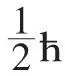
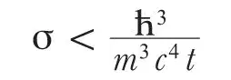

英文
英文贝特，佩尔斯
编者按
泡利认为放射性β衰变的过程中涉及了一种未知粒子——中微子，汉斯·贝特和鲁道夫·佩尔斯在这篇文章中对沃尔夫冈·泡利这一提议的含义进行了讨论。如果这种粒子质量很小且自旋为1/2，那么β衰变中放出的电子能谱的连续性就是可以理解的，而且核反应过程也因此而能满足能量和动量守恒。他们认为衰变发生时产生了中微子，并且中微子冲击原子核时会引发β衰变的逆过程。然而，根据他们的估算，中微子与其他物质的相互作用非常弱，因而难以观测。实际上，他们当时仍然没有找到任何办法来实现对中微子的观测。 英文
最近有观点认为[1]，存在质量和电子差不多、自旋为

（ћ=h/2π）的中性粒子，而这种“中微子”是在发生β衰变时与电子一起发射出来的。以上这个假设使得能量和角动量守恒定律在核物理中也得以成立[2]。衰变过程中发射出来的电子和中微子均可被认为是（a）衰变发生前就存在于核中，或（b）衰变发生时创生出来的。在最近的一篇文章中[3]，费米利用假设（b）提出了一种β衰变的模型，而这一假设似乎得到了实验的证实。 英文
按照（a）的解释，中子应该是由一个质子、一个电子和一个中微子组成的，而如果采纳（b）的解释，则中子和质子的作用就是对称的[4]，因此在核转变中也有可能同时发射出正电子和中微子。人们不太可能接受原子核中存在正电子的观点，因此，居里和约里奥[5]用人工正β衰变的实验有力地证明了（b）的解释是正确的。 英文
那么，为什么从未在天然β衰变中发现过正电子呢？这可以用以下事实进行解释：放射现象通常先出现α发射，从而导致核的电荷与其质量相比很小。而人工β发射发现于两种不稳定核（最可能是13N和30P）的形成过程中，即吸收一个α粒子并发射出一个中子，因此相对其质量而言，该不稳定的核具有很高的电荷。 英文
由假设（b）可得到以下结论：原子序数相差1的两个同量异位素只有在它们的质量差小于电子和中微子的质量之和时才是稳定的。否则，两个元素中较重的一个将发生蜕变并发射出一个中微子和一个正电子（或负电子）。两个同量异位素的质量差如此之小的情况对应于质量亏损曲线上有限的区域，该区域大概位于中等原子量处。实际上，已发现的原子序数相差1的同量异位素的质量数只有87、115、121、123、（187）和（203），而原子序数相差2的同量异位素是很常见的。对应上述第一个质量数，已知两种核之一（Rb）会发射β射线。而对应最后两个质量数，每个质量数的两种同量异位素中的任何一种都可以说相当稀少，而且很可能是实验误差导致大家以为存在着该同量异位素。其他三个质量数实际上很接近，且都具有中等的原子量。质子和中子是同量异位素的特殊情况。由于所有实验导出的中子质量值均在1.0068和1.0078之间，所以即使中微子的质量为零，中子和质子也肯定都是稳定的。 英文
产生中微子的可能性必然意味着湮没过程的存在。这些现象中最令人感兴趣的是以下过程：一个中微子撞击一个核后，中微子消失并产生一个正电子或负电子，核的电荷数改变了1。 英文
给定能量的中微子发生以上过程时，其散射截面σ可以通过放射出相同能量中微子的β衰变核的寿命t来估算。（这个估计与费米模型的结果一致，但更具有普适性。）在量纲上，以上两个物理量的关系式可写成
σ = A/t
式中A的量纲为cm2·s。该问题可能涉及的最长长度和时间分别是ћ/mc和ћ/mc2。因此

当能量为2.3×106电子伏、t为3分钟时，σ<10–44 cm2（相应于在固体物质中1016 km厚的穿透能力）。因此对于核转变时产生中微子的这类过程，我们绝对不可能观测到。 英文
随着能量的增加，σ也随之增大（在费米模型[3]中，当能量较大时，与(E/mc2)2相当），但即使假定能量急剧增大，甚至是宇宙射线的能量，σ也几乎不可能大到足以被我们观测到的程度。 英文
因此，如果中微子除了上述的产生和湮没过程外与其他粒子没有相互作用——而我们也没有必要通过假设这种相互作用的存在来解释中微子在核转变中的作用——则我们可以断言没有实际可行的观测中微子的方法。 英文
（沈乃澂 翻译；刘纯 审稿）